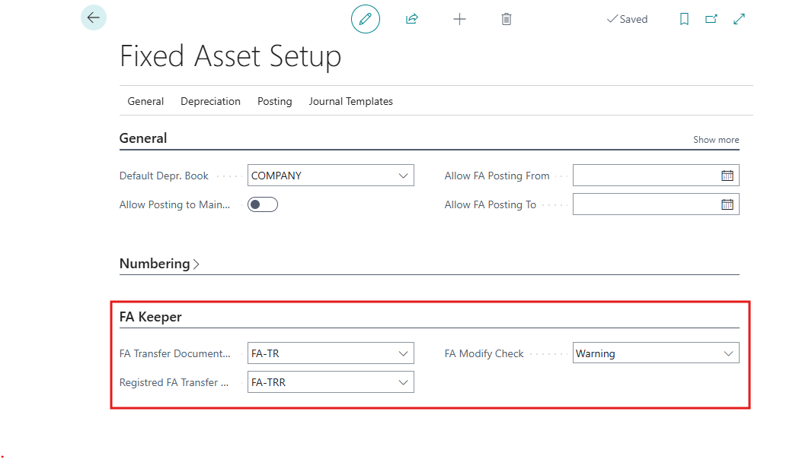

How to get started
Permissions Sets
To use Fixed Asset Keeper, the user must be assigned the permission set EAK-FA-KEEPER.
How to set up Fixed Asset Keeper
Select the Search icon in the top-right corner of the page, enter Fixed Asset Setup and then select the related link.
Fill in the Fixed Asset Setup tab FA Keeper:
- FA Transfer Documents Nos. - set the number series for fixed asset transfer documents
- Registered FA Transfer Document Nos. - set the number series for registered fixed asset transfer documents
- FA Modify Check – specifies whether it is allowed to manually modify the FA Location Code and Responsible Employee on the Fixed Asset Card. Choose one of the following options:
- None – no control is applied if fields are manually changed on the card. Select this option if Fixed Asset Keeper is not used in the company.
- Warning – a warning is displayed if the fields are manually changed on the card.
- Error – Manual changes to the fields on the card are not allowed.
Any option allows the initial entry of the FA Location Code and Responsible Employee on the Fixed Asset Card.

How to use
Transfer of the Fixed Asset
Choose the Search icon in the top-right corner of the page, enter FA Transfer Documents, and select the related link.
Choose +New to create a new document and fill in the following fields:
- Document Date
- Justification
- If you want to change the responsible employee, fill in the fields From Responsible Employee No. and To Responsible Employee No.
- If you want to change the fixed asset location, fill in the fields From FA Location Code and To FA Location Code
Choose Process – Suggest Lines to automatically populate lines with fixed assets where the Responsible Employee No. and FA Location Code match the values specified in the header.
Delete any unnecessary lines if needed. You can also manually add lines if the Responsible Employee No. and FA Location Code match the header values.
To print the transfer document, choose Actions – Print.
Once the fixed assets are transferred, change the document status to Accepted.
Choose Process – Register to register the document. Only documents with the status Accepted can be registered.
Fixed Asset Transfer History
To view registered fixed asset transfer documents, open the Registered FA Transfer Documents page.
To view the transfer history of a fixed asset, open the Fixed Asset Card, choose Related – History – FA Transfer Ledger Entries.